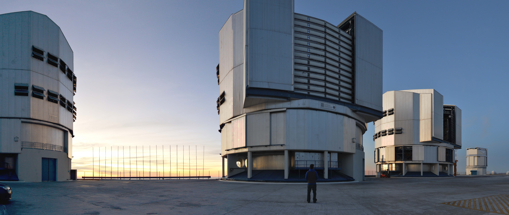

Romain Thomas
Head of Research Software Engineering, University of Sheffield

School of Computer Science
University of Sheffield
Sheffield, UK
Hello!
My name is Romain Thomas, I am the head of Research Software Engineering at the University of Sheffield, UK. I arrived in Sheffield in August 2023. My job aims at ensuring the long term sustainability and stability of the RSE team and of its member while advocating for better software in research. In addition to this new role, I am a two-time programme chair of RSECon, the largest RSE conference in the world (see RSECon26, RSECon25). The conference, happening every year in September in the UK, is the yearly gathering of people with a strong interest in the research software (RSEs, academics, students, HPC engineers, etc). The conference was hosted in Warwick in 2025 and came to Sheffield in 2026. I am also part of the committee of the first International Research Software Conference (IRSC).
Before coming to the UK I was an Astronomer at the Very Large Telescope in Chile. Where I started as a fellow in 2017 and continued as staff astronomer from 2020. While there I have been doing mostly observatory work, even though I should have done more science. I have operated UT1, UT2 telescope and controlled more than 6 Paranal instruments both in service and visitor modes. At the end of my fellowship I created the SCUBA framework, a software that controls the quality of data aquired at Paranal.

This project started as a proof of concept for a single telescope and then extended, during my time as staff astronomer, to all instruments of the VLT. I have led the team developing it (involving 4 main developers and all instrument scientists) and then passed the torch over to Juan Carlos Olivares, who is leading the team since then.
news
| Aug 28, 2026 | RSECon26 is coming to Sheffield in less than two weeks! |
|---|---|
| Aug 27, 2026 | Congratulation to P. Richmond, R. Chisholm and P. Heywood for being awarded a RSMF grant (round 2) for FLAMES GPU! |
| Jul 15, 2026 | Our project ERIS (Evaluating RSE Impact and Scope) has been funded by DiscouRSE. More info. |
Selected software projects
| Nov 30, 2025 | Saintelyon 2025 |
|---|---|
| Nov 16, 2025 | Morunner Half Marathon 2025 |
| Nov 02, 2025 | Delamere forst trail Marathon 2025 |